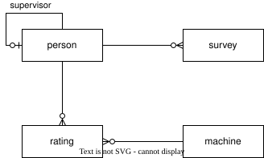

More Practice Questions

download surveys SQLite database file
- Show each person's first and last name.
- Count the number of people
- List all people who supervise someone else.
- List people with no supervisor.
- Show each person's full name and their supervisor's full name.
- Find surveys with no end date.
- List surveys with their owner's name.
- List distinct machine types.
- Count machines by type.
- Find ratings above level 1.
- Show who has a rating for which machine.
- Calculate each person's average rating on machines.
- List people who have at least one machine rating.
- List machines that no one has a rating for.
- Show how many surveys each person is associated with.
- List people who do not have ratings for any machines.
- Find machines that have not been rated by person P001.
- Find supervisors who are not associated with any surveys.
- List people who have ratings for more than one type of machine.
- Find the highest rating that anyone has on any kind of machine.
- List all of the people who have that highest rating for any kind of machine.
- Show the length in days of each survey.
- Show the total length of time that each person has spent doing surveys.
- Find the longest time between surveys for each person.